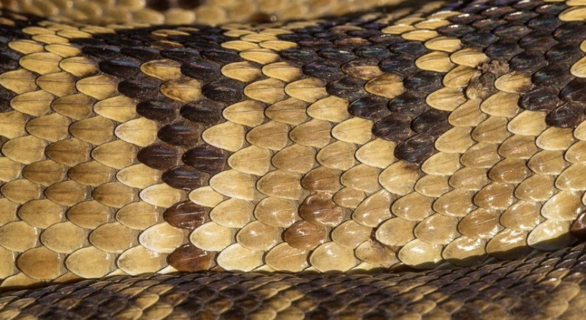
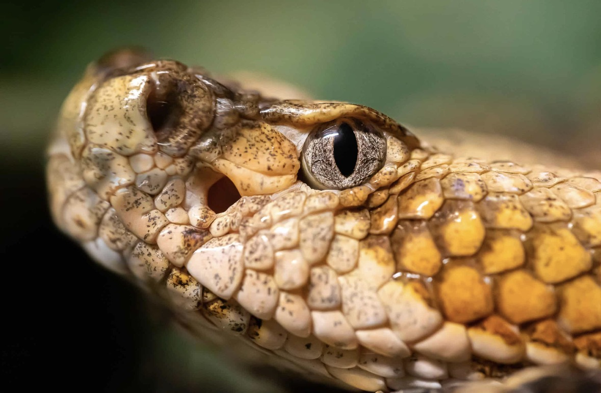

S
/
S
SENSORY
SERPENT
SCALE MEMORY
◉
OPEN CAMERA
CROTALUS · FIELD OF VIEW
A world
felt through heat.
In darkness, a warm body leaves a signal.
ENTER THERMAL VIEW
↗
LOREAL PIT
INFRARED RECEPTOR
WARM-BLOODED SIGNAL
COOL
WARM
CAMERA CONNECTED
×
01 — SCALE / EYE / HEAT
MOVE TO TRACK WARMTH
↺